Rio Tinto · UBC capstone · Mining intelligence
From mining news
to survey intelligence.
Turning company press releases into structured information about geophysics and geochemistry surveys: what is happening, how far it has progressed, and when.
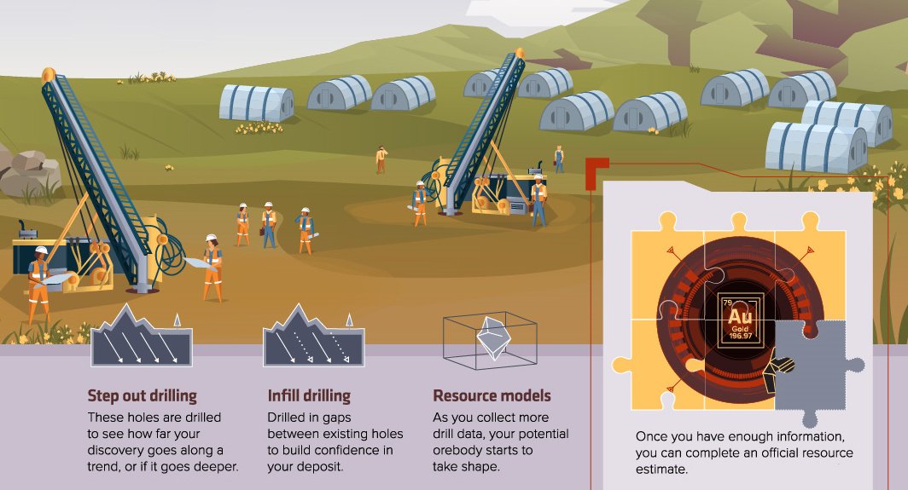
used for annotation
collected from the web
in the scraped corpus
test examples
The business problem
Find the signal across hundreds of company newsrooms.
Mining intelligence starts with scattered announcements. Our capstone with Rio Tinto explored how to convert those releases into consistent survey records, helping analysts track exploration activity and focus their research.
Working with our partners, we narrowed roughly 20 overlapping event categories to geophysics and geochemistry surveys. Understanding the exploration roadmap, from prospecting and surveys to discovery and monitoring, helped us choose three useful fields.
- Survey type
- Geophysics, geochemistry, both, or neither.
- Completion status
- Planned, in progress, ended, or results released.
- Survey dates
- Start and end dates, when supported by the release.
See the original survey-type overview
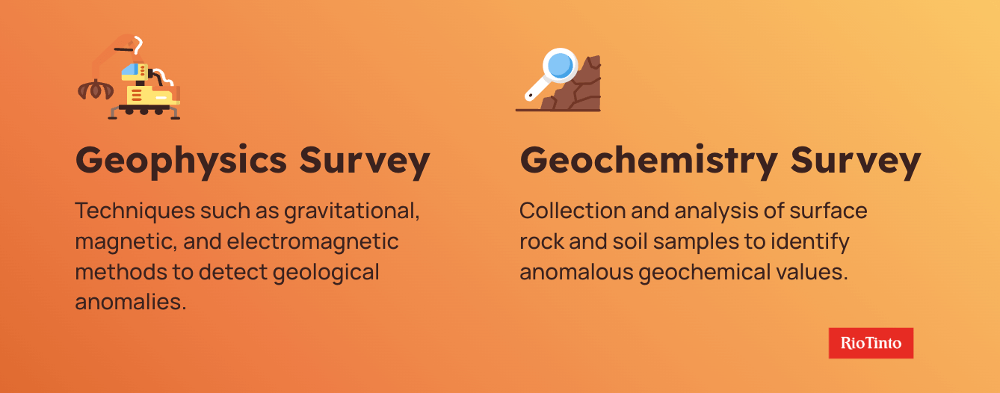
The data engineering
Connect collection, classification, and extraction.
The project combined two data streams: a historical corpus for model development and newly collected releases for the mining-intelligence workflow.
Build the training foundation.
Approximately 33,000 unlabeled excerpts, each containing the first two paragraphs of a press release. These concise passages typically carried the key announcement.
Output: GPT-assisted training labels
Gather new company announcements.
A CSV of 1,090 company news-directory URLs led to 9,872 collected releases from 638 companies. Releases averaged roughly 900 words.
Output: text, title, and publication date where available
- 01 · Collect
Discover & parse
Extract article links, save them to CSV, and route HTML and PDF releases to the appropriate parser.
- 02 · Classify
Identify surveys
Classify geophysics, geochemistry, both, or other. Skip date extraction for unrelated releases.
- 03 · Extract
Find status & dates
Predict completion status and ask survey-specific questions about start and end dates.
- 04 · Structure
Produce records
Combine labels and filtered date answers into a dataset for reviewing survey activity.
Explore the original collection workflow and corpus
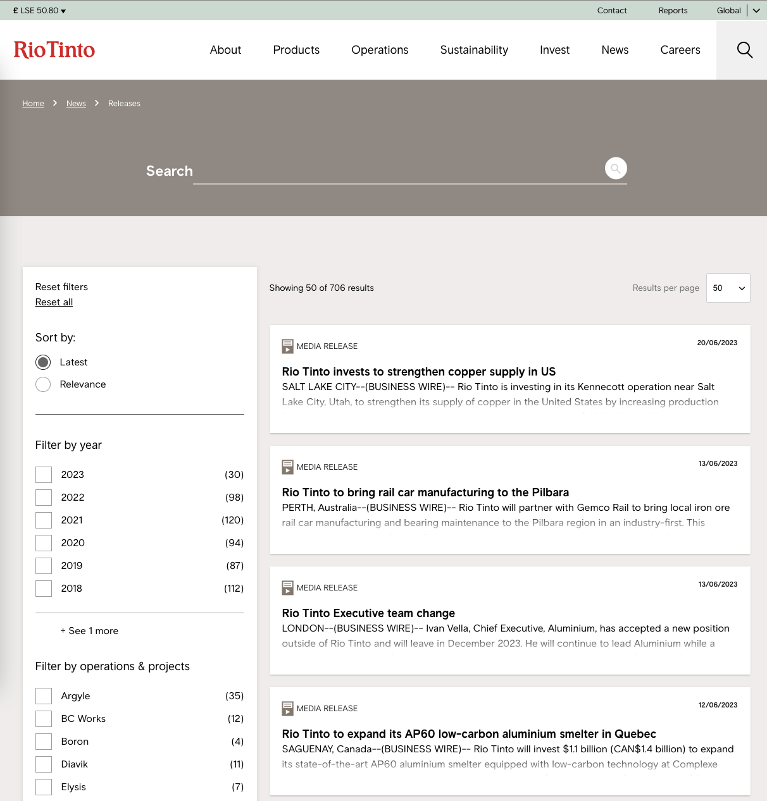
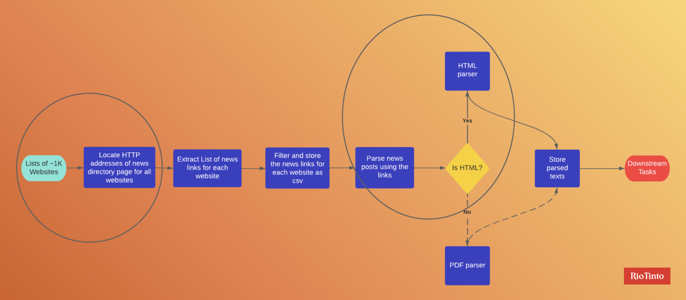
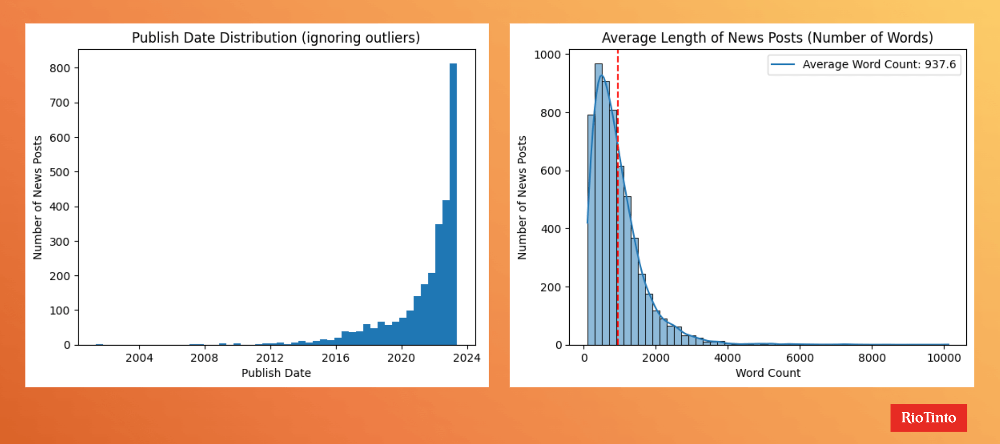
Explore the complete project architecture
The original diagram connects historical-data annotation and model training with the processing of newly scraped press releases. It also records alternative classification paths explored during development.
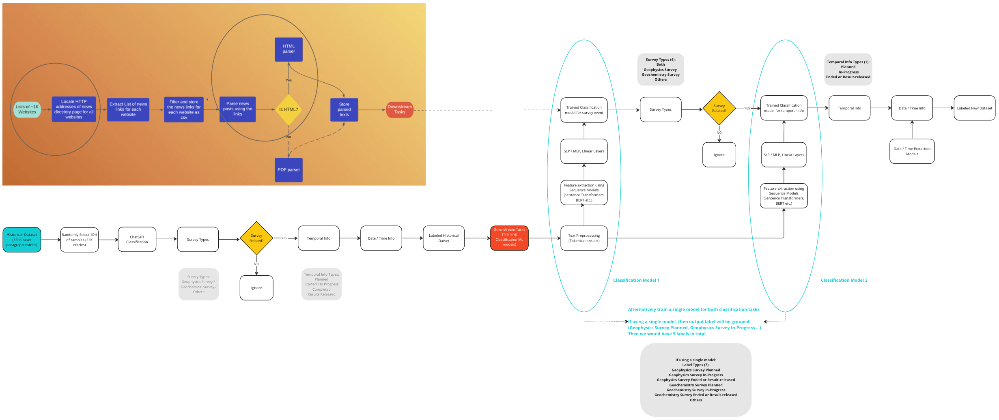
The modelling challenge
Learn from a corpus that arrived without labels.
We first explored topic modelling and zero-shot classification. After discussing the results with our academic advisor, Professor Zhu, we moved to supervised models, using GPT-3.5 Turbo to generate training annotations and human review to assess their quality.
- Start with 5,000 releases. Use an initial prompt to assign survey-type and status labels.
- Build a 150-example benchmark. Sample across predicted class combinations and manually annotate the examples with Rio Tinto partners.
- Refine prompts, then label the corpus. Compare prompt outputs with the reviewed examples before annotating roughly 33,000 historical excerpts.
- Train task-specific models. Compare survey-type and status classifiers, then use question answering for survey dates.
Survey type was evaluated on 150 annotated examples across four classes: Geophysics Survey, Geochemistry Survey, Both, and Others. The 45 examples in the Others class did not describe geophysics or geochemistry surveys, so they did not require completion-status labels. Completion status was therefore evaluated on the remaining 105 labeled survey examples across three classes: Planned, In-progress, and Ended.
See the labeling prompt, class distributions, and GPT results
Survey labels were Geochemistry Survey, Geophysics Survey, Both, and Others. GPT status labels were Planned, In-progress, Ended, and Result-released; the downstream classifiers used three status classes, with ended/results-released examples grouped together.
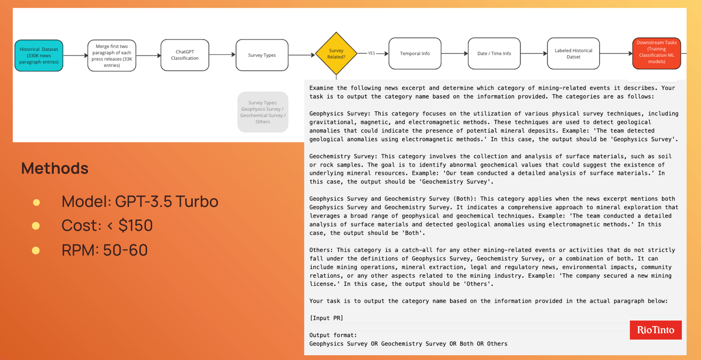
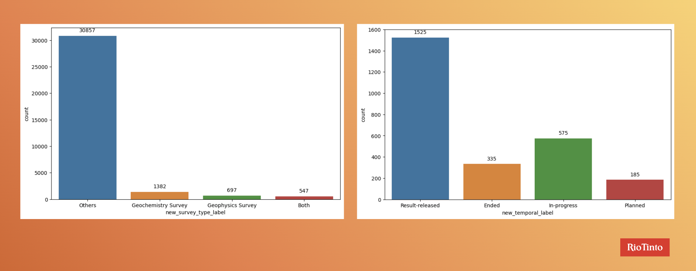
| Task | Reported accuracy | How to read it |
|---|---|---|
| Survey type | 81% | Across 150 reviewed examples. |
| Completion status | 77% / 92% | 77% includes upstream survey-type misses; 92% excludes those misses. |
| Survey dates | 73% / 67% | Geophysics / geochemistry date annotations, respectively. |
Compare model choices and training details
- Zero-shot & topic modelling
- We tried one- and two-step Contriever classification, Sentence Transformer similarity, LDA, and BERTopic. Relevance thresholds were difficult to set; BERTopic produced interpretable topics, but forcing fewer topics reduced usefulness.
- Supervised classifiers
- We compared DistilBERT, fastText, DistilRoBERTa, and a bidirectional LSTM using DistilBERT representations. The LSTM and pooling experiments did not deliver the improvement we sought. fastText provided a lightweight word/subword baseline.
- Training & imbalance
- The workflow covered preprocessing, tokenization, initialization, and iterative training. We downsampled majority classes; the documented DistilBERT configuration used 20 epochs and a batch size of 32. Evaluation included accuracy, precision, recall, F1, and confusion matrices.
- Adding survey context
- For DistilRoBERTa, the survey-type classifier read the first two paragraphs. The status classifier also received survey type as an input, providing context for the Planned, In-progress, and Ended categories.
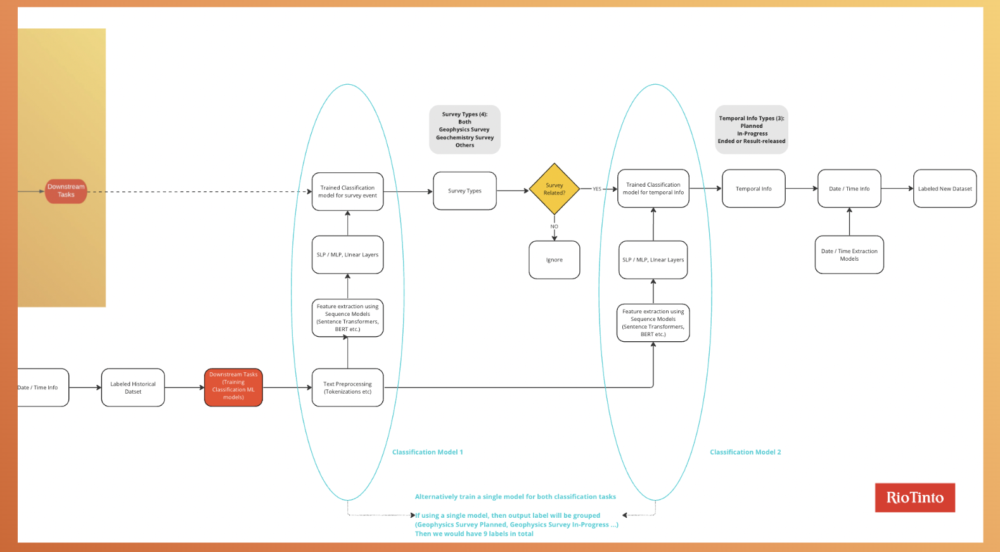
Follow the evidence
The survey date is not the publication date.
This example comes from the original project’s date-extraction output. A release published in 2016 describes a geophysical survey conducted in 2015.
Copper Joe project update
“A magnetotelluric geophysical survey conducted by Kiska and FM in 2015 identified a discrete, 1 km wide conductivity low anomaly…”
What is the end date for the geophysics survey?
Model answer2015The answer supplies a year. The excerpt does not establish an exact completion day.
View the original outputWe formed each question from the survey type, requested date field, and release text. For “Both,” we asked about each survey separately; for “Others,” we skipped the date task. Combining answer scores with date parsing helped filter irrelevant responses.
Explore the original date-extraction inputs and output
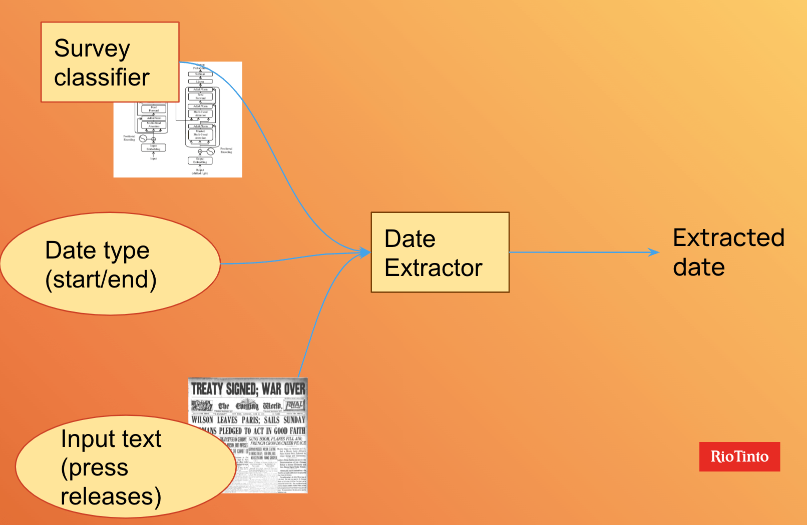
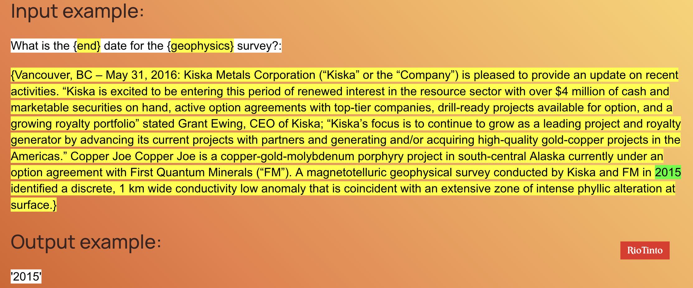
The results
Evaluate each field, not just the pipeline.
Survey relevance, completion status, and dates posed different challenges. The reported final results below separate model performance by task and evaluation scope.
DistilBERT led on survey classification.
Accuracy · rounded to whole percentages · 0–100% scale
DistilBERT achieved 91% accuracy, compared with 86% for DistilRoBERTa and 67% for fastText, on 150 test examples. The four-class task distinguished geophysics, geochemistry, both, and unrelated releases, providing the first stage for identifying relevant survey announcements.
Explore survey-type classification reports
Precision, recall, F1, and averages are rounded to two decimal places.
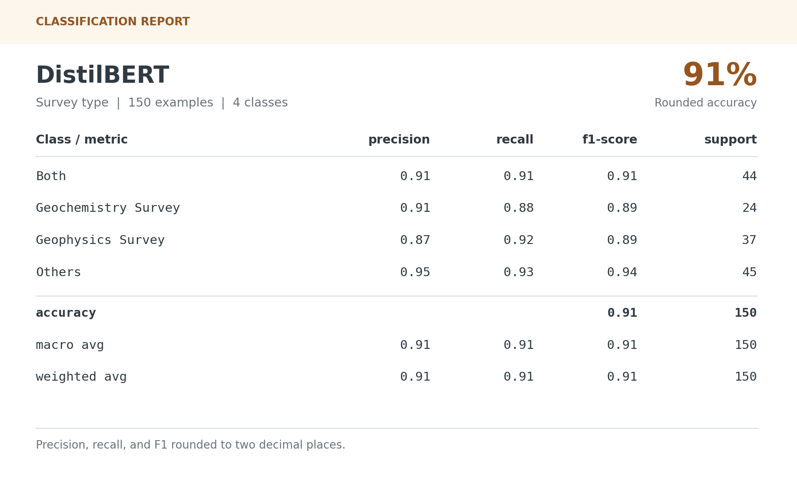
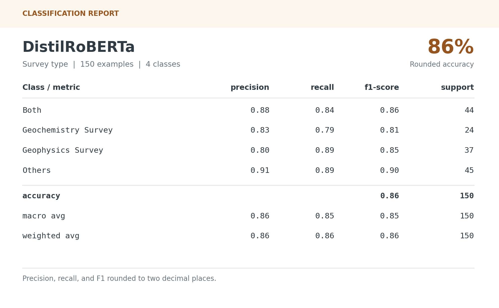
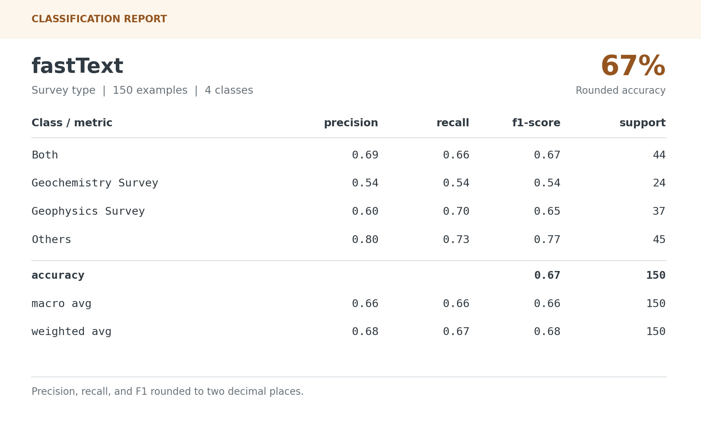
DistilBERT reached 94% status accuracy.
Accuracy · rounded to whole percentages · 0–100% scale
On 105 labeled test examples, DistilBERT achieved 94% accuracy, followed by DistilRoBERTa at 93% and fastText at 80%. Distinguishing planned, ongoing, and completed surveys gives analysts a more useful view of exploration activity than survey relevance alone.
These scores measure completion-status classification on labeled survey examples. They do not measure end-to-end accuracy across all scraped news.
Explore completion-status classification reports
Precision, recall, F1, and averages are rounded to two decimal places.
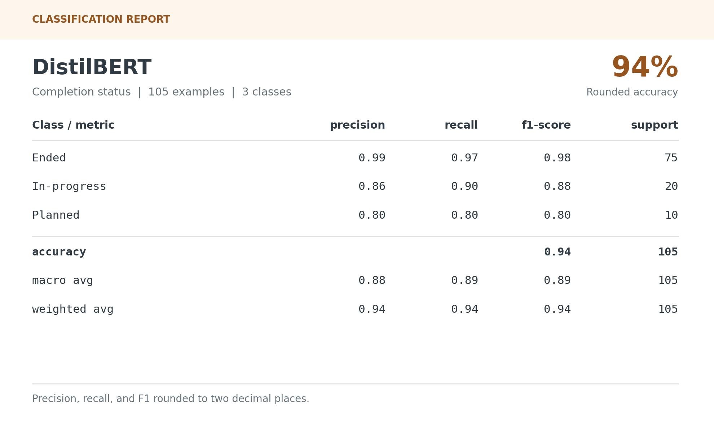
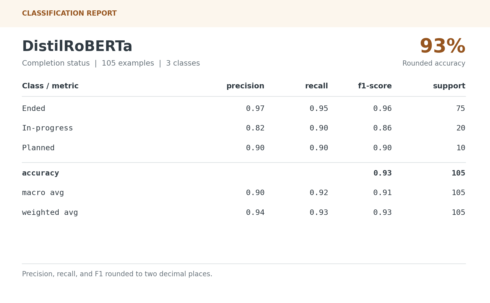
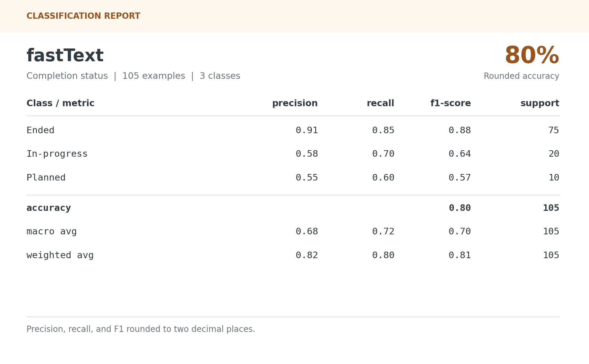
Extract dates while preserving their meaning.
Reported date-extraction accuracy
Flan-T5 achieved 80.54% reported accuracy for survey-date extraction. The workflow combined survey-specific questions with answer scoring and date parsing.
Development experiments highlighted three issues that shaped how date answers should be interpreted:
- A year became a false exact date
- A parser could turn “2013” into “2013-06-14” by filling missing fields with the current month and day. A correct year then became an unsupported full date.
- Valid partial dates were lost
- Expressions such as “mid-July” did not always standardize cleanly. Rejecting every unparseable answer removed some useful information.
- The correct date landed in the wrong field
- A completion date assigned to “start” instead of “end” counted as a mismatch. Survey status and date-field semantics needed to be considered together.
Score-only filtering was insufficient; parsing alone also discarded valid answers. The final approach combined both. Future work should preserve the precision actually present in the source.
Business value & lessons
Make exploration news easier to investigate.
The project brought web collection, LLM-assisted annotation, and supervised NLP into one workflow. Its practical value was turning scattered announcements into structured survey information that could support analysts’ research and investment discussions.
Scope the problem with the people using it.
Partner discussions turned a broad mining-event tracker into a concrete task: identify surveys, their status, and their dates.
Review the labels before trusting the score.
LLM annotations made training feasible, while the development benchmark exposed imbalance and error propagation. Reporting test-set sizes and task-specific accuracy makes the results easier to interpret; class-level checks remain important for less common survey events.
Keep the evidence and its uncertainty.
False positives, missing dates, and partial dates affect how useful a record is to an analyst. Next steps include broader date-format support and status-aware extraction, potentially with separate date models for different release types.
From raw documents to useful data.
This capstone brought together data engineering, model experimentation, and collaboration with domain specialists. Explore my later work applying those skills to enterprise AI at Lenovo.